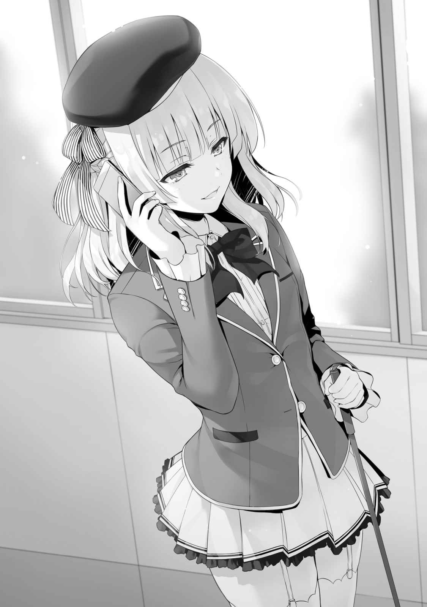

○他クラスの考え
Ｄクラスは、試験が始まってから終始、表面上は普段と変わらなかった。
この追加試験が発表されて以来、クラスの約９割の感情は一致していたからだ。
試験前日の金曜日になっても、それは同じだった。
『
口にすることもなく、示し合わせるわけでもなく、多くの生徒がそう決意していた。
これまで龍園はその独裁めいた主導方針でクラスを導いてきた。しかし、お世辞にも結果が良かったとは言えない。現にＣクラスから転落し最下位をひた走っている。
何より多くの生徒が暴力や
試験が３日目になる頃には、Ｄクラスの生徒たちの多くは口裏を合わせていた。
石崎の苦悩と、クラスの感情の方向性を、龍園は試験内容を知ると同時に理解した。
そして決める。この試験で学校を去ることに対して無抵抗でいることを。
だからこそ、追加試験が終わるまでの、残り
学校を去った後どこで何をするのか。それを考える必要もあったからだ。
そのため教室に残ることほど時間の無駄はない。
すぐに龍園は教室を後にした。
そんな背中を見送った
これまでは龍園に誘われることが多かったが、今ではそれもない。
そんな伊吹の前に影が差す。
「暗い顔よね。そんなに龍園が退学するのが嫌？」
「はあ……またあんた？ そんなに私に絡むのが好き？」
「別にぃ。心配して話しかけてるだけじゃない。龍園くんがいなくなってから、ますますクラス内で影が薄くなってるみたいだし？」
そう言って伊吹を挑発したのは、クラスメイトの
入学当初から伊吹とはウマが合わずぶつかり合うことも少なくなかった彼女だったが、伊吹が龍園に
そのことを、真鍋は内心ひどく不愉快に感じていた。
そのうっ憤を晴らすかのような、挑発
「伊吹さんは、やっぱり私に批判票入れる？」
「さあ」
「入れなさいよ。私は入れるんだし、お互い様ってことでさ」
「……あ、そ」
気のない返事に、真鍋はやや
もっと怒ったり困ったりする伊吹が見たかったからだ。
「別に伊吹さんは退学しないから安心なだけ？ 何人かが龍園くんに
龍園がいないからと強気な姿勢の真鍋だが、それは他、多数の生徒も同様だ。
石崎は席を立った。
明日には追加試験が始まる。
始まってしまえば、どうすることも出来ない。
「ちょっと付き合えよ伊吹」
そんな
「……別にいいけど」
「余裕ぶるのもいいけどさ。
まるでクラスの支配者のように、真鍋は強気な発言を伊吹に送った。
「それで、どこに行くわけ？」
廊下に出て真鍋を視界から消した伊吹が聞く。
「別に。ただちょっと話がしたかっただけだ。龍園さんの持ってるプライベートポイントのことだよ。どうなった」
「どうなったもなにも、あいつが持ってる」
「まだ回収してないのか。試験は明日だぜ？ 退学したら、全部なくなっちまうのによ」
「回収しないって最初息まいてたのはどこの誰よ」
「それは……そん時はプライベートポイントなんて、って思ったんだよ……」
「そんなに拾いたいなら、あんたが直接頭下げて回収すれば？」
「俺は動けねえよ」
それがわかっているからこそ、伊吹も意地悪めいたことを口にした。
「あんたはクラスにとって龍園殺しのキーマンだしね。下手に龍園と接触したことがバレたら怪しまれる。もしかして裏切るんじゃないか、なんてね」
龍園退学を
だが、そんなことをすれば今度は石崎が退学のリスクを負う。何より龍園失脚の理由として石崎が奮い立ったという事実が成り立たなくなってしまうのだ。出来るはずもない。
龍園を救いたい気持ちと、自分は助かりたいという気持ち。
相反する状況に苦しんでいた。
「俺は……クソ、何やってんだかな……」
「龍園が退学になるのが、一番いいんじゃないの。あんただってわかってるでしょ」
「それで本当にいいのか？ 龍園さん抜きで、この先勝てると思ってんのかよ」
「ろくな結果も出してないのに、よくそこまで持ち上げられるもんね。あいつの行動は理解不能なだけで、全く明るいものじゃないでしょ」
「確かにギャンブルだ。けどよ、あの人抜きじゃＡクラスなんて夢もまた夢なんだよ」
総合力が高く、龍園も警戒する
結束力の高さと安定した成績を保有する
そして龍園をも圧倒する腕力と、底知れない知略を兼ね備えた
クラスとしての力の差は歴然。
石崎の中には確固たるイメージがあった。
そんな化け物たちと渡り合うには、同じように化け物がいなければならない。
龍園
「ま、龍園が普通じゃないってのは認めるけどね」
それは、あの綾小路にすら届くほどのものじゃないか。
そんな風に考えている自分がいる。
「クソっ……」
そんな石崎を横目に見ながら、伊吹は考える。
この試験で自分にできることは何かあるのだろうかと。
石崎は暑苦しい男だが、それでも懸命にこの試験に
なのに自分は龍園を見殺しにして、助かろうと思っているだけ。
そう。伊吹は石崎ほど余裕がない。
クラス内でも、間違いなく嫌われている側の人間だと自覚している。
現に龍園が消えれば、次にターゲットにされるのは伊吹だ。
あの
だがそれでも、大人しくしていれば今回は助かる。
あるいはこの先に、何か違う道が見えてくるかも知れない。
それが、伊吹を
『あの男』の言葉を思い出す。
『ただ助けたいと口にして誰かを助けられるほど、これは生易しい試験じゃない』
伊吹の心、考え方など『あの男』には分かっていたのだ。
だからまともに相手にしようともしなかった。
「あのさ石崎」
「なんだよ……」
「あんたは龍園を退学させたくはなかった。それ本心よね？」
「……ああ。
「そう」
龍園より多くの
「認めたくはなかったけど、あんたと気持ちは一緒。それだけは覚えといて。この先、龍園の次に私が消えるとしてもね」
龍園が消えれば、次は伊吹。
その現実が改めて見えた。
「今夜龍園に会ってプライベートポイントを回収してくる。多分私にしか出来ない」
そしてそれを残し、生かしていくことがＤクラスの為になる。
「やっぱり、それしか道はないのかよ……」
「私たちにできる精いっぱいのことは、それくらいでしょ」
龍園
それがＤクラスの為になるのなら、引き上げておかなければならない『財産』だ。
１
夜中。伊吹は許可も取らず龍園の部屋を訪ねた。
乾いたノックが冷たい廊下に小さく響く。
しばらく待たされた後、扉が開いた。
「おまえか」
「……あんた、何してんの」
上半身裸、そして下半身はトランクス一枚だった。
「下品なことだつったら引くか？」
「今すぐタマ蹴り飛ばして部屋に帰る」
「クク。単なる風呂上がりだ、上がれ」
確かに髪はまだ
言葉遊びに警戒しながらも、伊吹は龍園の部屋に入った。
１年間で初めてのこと。
思ったよりも、色んな小物が置かれていて、あの男の部屋とは印象が違った。
「退学前に、俺と一夜を共にしたくて訪ねてきた、ってわけじゃないんだろ？」
長々と言葉遊びに付き合うつもりのない伊吹は本命を切り出す。
「あんたの持ってるプライベートポイント。私に全部頂戴」
「あ？ てめぇは一度いらないって突っぱねたんじゃなかったのか？」
バスタオルで髪を拭きながら、龍園は冷蔵庫からペットボトルを取り出す。
それを伊吹に出すわけでもなくキャップを開け自らの喉に流し込んだ。
「今回の試験、あんたにはもう活路がない。つまり死に金になるってことでしょ」
「そうだな。俺がこのまま金を抱いて死ねば、全て消え去る」
Ａクラスとの内密な契約も切れ、Ｄクラスに
「だから
「
「あんただって本望でしょ。もし渡す気がないなら、最後に散財してたっておかしくない。でもその気配はなかった。だから拾ってやるって言ってんの」
龍園のここ数日間は大人しいものだった。
精々数百、数千ポイントしか使っていないのは明らか。
「クク、なかなか言うじゃねえか。いいぜもってけよ、どうせ不要な金だ」
そして携帯を手に取り操作を始める。
作業は
「確認できた。これであんたは用済みよ龍園」
そう言って携帯を
そして壁に伊吹を押しやった。
「ちょ、何すんのよ！」
「おまえの好戦的な性格は嫌いじゃなかったぜ」
「はあ!?」
何かをされるかと敵意を見せる伊吹だが、龍園は笑ってすぐに手を放した。
龍園なりの、最後の別れの挨拶。
「おまえは強いが、俺に言わせれば
「余計なお世話よ」
「じゃあな伊吹」
龍園は、もはや興味をなくしたのか伊吹から視線を外す。
そして追い出すように玄関へとやった。
靴を履く間、僅かな沈黙が流れる。
「あんたこの学校にいて楽しかった？」
伊吹は背中を向けたまま、そんなことを龍園に聞く。
「あ？」
「何でもない」
普段の龍園を見ていれば、そんなことはわかる。
龍園は満足なんてしてない、と。
そして満足出来ないまま、この学校を静かに去ろうとしている。
立ち上がり、扉を開くと冷たい風が吹き込んできた。
「サヨナラ」
伊吹は別れの言葉を残し扉を閉めた。
誰もいない真夜中の廊下。
携帯の画面に映し出された巨額のプライベートポイント。
伊吹は廊下を歩き出すなり、電話をかける。
相手が寝ていたとしても知らない。
その場合は留守電を残して切るつもりだった。
だが、相手は２コールもしないうちに電話に出た。
「私だけど。
報告しておくべき人間に報告して、役目は終わりだ。
電話越しに、あの男から直接会って話がしたいと言われる。
「いいけど、ね……」
どうせ外に出たついでた。
２
同じくして追加試験前日の金曜日。
Ｂクラスの生徒たちは放課後も教室に残っていた。
誰一人欠けることなく、全員。
「みんな。今日までいつもと同じように過ごしてくれてありがとう。私の勝手なお願いを聞き届けてくれたことを素直に感謝してる」
一之瀬は追加試験が発表された後、クラスメイトに１つのことを伝達した。
『試験前日の放課後まで仲良く、普通に生活してほしい』
ただそれだけ。
それだけを伝え、詳しい戦略を話すことはしなかった。
ギスギスしあっていても、得られるものは何もない。
この試験が退学者必須のものであることは、明確だったからだ。
不安になってもおかしくないが、Ｂクラスの生徒たちは忠実にそれを守った。
一之瀬の言葉に従った。
それがＢクラスのためになることを、彼ら彼女らは１年間で学んでいたからだ。
一人の教師として、担任として一之瀬の話を聞いていた星乃宮は、
「沢山心配させたと思う。だけど安心して欲しい。私たちの中から退学者は出させないよ」
誰もが瞳の奥に不安を抱える中、一之瀬はそう言い切った。
それは朗報と同時に、疑問をも生むことになる。
「大丈夫なのか一之瀬。ハッキリと言い切って」
もしクラスメイトを思っての
「いいんだぜ
無策でも責めない、そんな姿勢を
しかし一之瀬は再び繰り返す。
「大丈夫だよ。神崎くん、私に教えてくれたことがあったよね。力を持っているのに、それを使わないのは
ここにいる全員が退学することはない。確信を持っていた。
「……なら聞かせてくれ。どうやって退学者を防ぐ」
だが示す根拠がなければ、それは一之瀬の妄想でしかない。
「この追加試験、全員が生き残る方法はたったひとつだよね？」
「ああ、２０００万ポイントで退学を無効にすることだけだ」
「だから、クラスメイト全員の、今持ってるプライベートポイントを私に
「でもさ、確か２０００万ポイントには届かないんじゃないか？」
クラスメイトの柴田が、全員を見渡しながら言う。
何度も相談しあったが無い
届かない数百万のポイント、その壁が厚い。
「いいじゃない。
詳しく聞かずとも、女子たちはすぐに一之瀬にポイントを送り始めた。
毎月送金しているため、その手順は慣れたもの。
「ま、それもそうだな」
柴田もすぐに納得し、操作を始める。
クラスメイトからの信頼が厚い一之瀬は、すぐに全員から、その持てるプライベートポイントのすべてを託される。
携帯に表示された合計金額は、１６００万ポイントを少し下回るくらいだった。
「うん、やっぱり計算通り大体４００万ポイント不足してるね」
「どうやって足りないポイントを補うつもりだ。それだけの大金、他クラスや他学年が出すとは思えない」
冷静な神崎はポイントを送りながらも、回答を要求する。
一之瀬は
だが、ここまで来て仲間にそれを伏せておくことは出来ない。
だからこそ前日の今、一之瀬は南雲から許可を
「南雲生徒会長だよ。この話を相談したら、不足分を助けてくれるって言ってくれたの」
「生徒会長が？ そんな大金を出せるのか」
「うん。実際に持ってるポイントも見せてもらえた」
確実に保有していることの証明も、
「もちろん後で返すことにはなるよ」
「返済プランと
「その有無が結果に影響するのかな？」
「いや、それはない。どれだけ高い利子でも仲間には代えられないと思っている」
その点は
だが詳細を把握しておくことは、この先に必要なことだと判断した。
他の生徒が聞けないことを聞く役目を
それを一之瀬も大きく感謝している。
生徒たちの気持ちを代弁して聞いてくれる、大切なパートナーだ。
「返済期間は３ヵ月で、利子は無いよ」
「借りた額そのままでいいということか……」
この苦しい状況であれば、何割か要求されてもおかしくない。
それを無利子で貸し付ける南雲生徒会長は、Ｂクラスにとって救いの存在に見えた。
「皆にはしばらく不便を強いることになると思うけど……それでもいいかな？」
「すご……さすが一之瀬さん！ 超大賛成だよ！」
クラスメイトたちは、誰一人不満な様子を見せなかった。
だからこそ、絶対に退学者を出してはいけない。
これは一之瀬
３
その日の夜。一之瀬は南雲に１本の電話をかけた。
明日の試験に向けての最終確認のためだった。
「南雲先輩。一之瀬です」
「帆波か。俺に電話をかけてきたってことは、例の件だな？」
「はい。今日Ｂクラスの皆に話しました。それで、先輩にもう一度だけ、改めて今回のことで確認をしておこうと思いまして」
「俺が出した条件は変わらないぜ。クラスメイト全員から、１ポイント残らず回収して、可能な限りプライベートポイントをかき集めておくこと。全員で苦しみ痛みを共有しないで救われるなんてことは許されないからな」
「そうですね。私もそう思います」
自分たちのお小遣いを残したままポイントを借り受け、楽に助かるのは認めない。
それが南雲の出した条件の１つだった。
南雲は膨大な一千万近くのプライベートポイントを保有している。
だが、その額全てを貸せるわけでないことは明らかだ。１ポイントでも借りる額を少なくすることは、言われずとも率先してすべき、
「不足したポイントは
「４０４万３０１９ポイントです」
「そうか。それくらいなら俺も最低限の負担で済む。それでもこれから先の試験で、かなりのハンデを負うことは避けられないけどな」
「はい……」
仮に次の試験で南雲のクラスに退学者が出れば、
その時に貸した４００万ポイントに足元をすくわれる可能性もある。
どれだけありがたい申し出であるか、一之瀬は痛いほど理解していた。
「本当にすみません、私の
「いいさ。誰も見捨てない、そんなおまえらしい作戦だ。ただもう１つ。ポイントを貸す上での条件は覚えてるよな？」
「……はい。私と、その、南雲先輩がお付き合いする、ということですよね……？」
「ああ。その条件を飲むなら今すぐにでもプライベートポイントを振り込む用意がある」
「……今日の夜中12時が、タイムリミットでしたね」
「まだ迷ってるのか。クラスから
「もちろんです。ただ、少し不安にも感じています」
「不安？」
一之瀬は言葉にし
「先輩は、その……わ、私のことが好きなんでしょうか？」
「なに？」
「あ、いえっ。すみません、こんな失礼なこと聞いて……だけど、付き合うというのは、そういった感情があるから成り立つものだと、思うんです……」
「おまえのことが嫌いなら、俺はこんな条件をつけたりはしないぜ」
迷わず答える南雲。
一之瀬はその言葉を
「納得がいったなら、今からポイントを送る」
「待ってください。私……ギリギリまで頑張りたいんです」
「それがこの数日間じゃなかったのか？」
刻一刻と、南雲との期限が近づいてきている。
「２年や３年から借りることは出来なかったろ？ 敵である１年なら
４００万を超えるプライベートポイントを貸せる存在は南雲の他にいない。
それを南雲もよくわかっている。
しかし南雲は深く一之瀬を追及しなかった。
どうせ時間がくれば、
「気をつけろよ。俺は時間にはうるさい男だからな」
「はい。後で必ず連絡します」
通話を終え一之瀬は大きく息を吐いた。
そして壁にもたれかかる。
クラスメイトを守る。それは一之瀬にとって何よりも優先すべきことだ。
ただ、一之瀬には恋愛経験がない。
こんな形で誰かと付き合うことが自然なことだとは、到底思えなかった。
何より……それは間違いだと心が告げる。
誰かと誰かが付き合うのは、互いに好きでなければ意味がない。
片方からの気持ちだけでは無意味なのだと。
だが一度付き合ってしまえば、自分から別れるなどとは言い出せない。
「はあっ……覚悟、決めたはずなのにな……」
時刻は夜の９時を回る。
あと３時間以内に、一之瀬は答えを出さなければならない。
重たいため息が出る。
それでも、自分が我慢すればクラスメイトを助けられる。
それが最善の、唯一の方法なら……。
それでも最後の最後まで、心にブレーキがかかってしまった。
この条件を
そんな悲しい予感。
「ダメ。ダメだよ私」
どうしてここにきて、再三考えを改めようとしてしまうのか。
ここで南雲との交渉を成立させなければ、Ｂクラスから退学者が出る。
「……よしっ」
パン、と一度自分の両頬を軽く
「私は───皆を守るんだ」
覚悟を決めた一之瀬は、一人静かに笑った。
４
一之瀬が南雲との条件を呑む決意をするより数日前。
追加試験が発表されたその日に
Ａクラスにとって、他クラスとは違いこの追加試験は歓迎すべきものだった。
どのクラスよりも早く、確実な結論を導き出していたからだ。
「後はおまえたちが話し合い、試験当日で結論を出すことだな」
担任の
残された時間を生徒たちに割り振ると、
「今回の試験。
迷わず坂柳は名指しした。
城は目を閉じ腕を組んだまま、ジッと動かない。
「な、なんだよそれ、そんなの
唯一抵抗を見せたのは、城を
「やめろ弥彦」
しかしその戸塚を城が
「で、でも城さん！」
「俺は受け入れるつもりだ」
「異議はないようですね。というより異議を申し立てる
既にＡクラスの大半は坂柳の
自分が安心で安全に卒業するために、坂柳の味方に付き続ける。
唯一、戸塚だけは城を
それが無意味なことは、城が一番理解していた。
「では挙手で決を採ります。今回の追加試験で
クラスメイトが一斉に手を挙げる。
戸塚と城、そして坂柳を除く37名全ての賛同。
真嶋はこうなることを予見していたように、静かに目を
「これで今回の試験に関する話は終わりですね」
「いいんですか、こんなんで！」
「いいんだ弥彦」
最後まで抵抗する戸塚だったが、城は坂柳に反論をしようともしない。
「
「で、でもそれでクラスポイントを得たじゃないですか！ 俺たちが損してるわけじゃないですよ！ それにＤクラスからも退学者が出るなら龍園が選ばれるかも！ そうすれば城さんが退学しなくても、契約は無効になるはずです！」
必死に論を組み立てる戸塚。
「このクラスのリーダーだからって、何でもやっていいと思うなよ！」
「いい加減にしろ弥彦」
一人ヒートアップする戸塚を、城は再び制する。
先ほどよりも強い口調で。
「
当人が一番苦しいはずの状況でも、努めて冷静を装っていた。
その姿に胸を打たれつつ、
「私としては続けて頂いても構わないのですが？ 面白い演説でしたし」
「結構だ。俺が退学する方針に異論はない」
「そうですか。では、城くんの意向を
５分にもならない話し合いで、Ａクラスは追加試験の結論を導き出した。
まるで追加試験などなかったかのように、Ａクラスにはいつもの時間が流れ出す。
城は席を立ち、一人になるため廊下へと足を向けた。
それを追い、当然のように戸塚が
「城さん、本当に退学に異論はないんですか！」
「……仕方のないことだ。この試験はクラスに権力のある生徒が圧倒的に優位。俺がもがいたところで、
「で、でも、坂柳に不満を抱いてる生徒だっているはずですよ。そいつらを集めて───」
「おまえにはこれまで、
「城さん……」
「だが俺が退学した後は、おまえは坂柳についていけ。下手に逆らえば、次に狙われるのはおまえだ、
それが分かっているからこそ、坂柳と戸塚の衝突を避けさせたかった城。
「それが俺からの、最後の指示だ」
「……う、くっ……！」
悔しさで顔を
５
その日の放課後。
「帰りましょう
「……そうね」
坂柳は
「ケヤキモールのカフェで新しい飲み物が出たそうなんです。飲んで帰りましょう？」
週末にはクラスメイトから退学する生徒が出る。
しかも自分が名指しした生徒だというのに、いつもと様子は変わらない。
「あんたさ」
「なんです？」
「……なんでもない」
聞くだけ無駄だと思い直した
神室も似たような人間だからこそ、それを指摘するのはおこがましいと思った。
２人の間に流れる沈黙を割いたのは１本の電話だった。
坂柳がポケットから携帯を取り出す。
「御機嫌よう
「物好きね……」
こうして山内と話し込む坂柳の姿は、最近は珍しくなかった。
連日のように互いに電話をし合い
「今日ですか？ ええ構いませんよ。お会いしましょう。しかし今からは少々約束があって都合が悪いので、後で合流しましょうか」
電話の内容が山内からのラブコールであることは、すぐに分かった。
「今移動中ですので、後でご連絡しますね」
そう言ってものの数秒で、電話を一度終える坂柳。
「というわけで、夜に山内くんとお会いすることになりました」
「あんた、山内と頻繁に連絡取り合ってるみたいだけど、どういうつもり？」
「彼が気になる存在だからですよ」

「気になるって、好きってこと？」
「私が彼を好きになってはおかしいですか？」
「冗談でしょ？」
「ええ。冗談です」
「あのね……」
「Ｃクラスのスパイとして利用できないかと、調教中です」
「調教中って……そんな簡単にいくわけないでしょ」
「彼の場合はそれがそうでもありません。面白い試験が告知されたことですし、実験体として動いていただいていますよ」
神室に対して、
側近とはいえ完璧に信用できる相手ではない以上、隠すべきことは隠しながら語る。
「まずは今日、彼にお会いしましょう。少しは私の狙いが分かるはずです」
これからのことを思い描き、坂柳は
６
夜。
坂柳と神室はケヤキモールで山内と合流していた。
その様子を人に見られないため、カラオケの部屋を集合場所にして。
「今日も、その……神室ちゃんがいるんだね」
「すみません。まだ２人きりのデートは恥ずかしくて……」
「い、いやいいんだよ全然！ こうやってデートできるだけで幸せだしっ！」
嫌われたくない思いの強い山内が必死に笑顔を作る。
本当なら坂柳と２人きりになって、告白。
その後正式な恋人になりたいと思っているが、ぐっと我慢して
「山内くん。今度の追加試験、大丈夫ですか？」
「えっ？」
「いえ。大丈夫ならいいんです、ただ……」
少しだけ意図的に間を作る。
「もしも山内くんが退学してしまったら、このように会うことも出来なくなります。私、それだけは嫌なんです」
そんなぶりっ子のような態度に神室は吐き気を覚えたが、顔には出さない。
これはあくまでも坂柳の遊びだ。
それをいちいち真面目に受け取っていたら身が持たない。
「お、俺だって嫌だ！」
「気持ちは一緒、ということですね」
ホッと胸を
「もし何か困っていることがあれば、私が相談に乗ります」
「でも───」
「確かに私と
「それは確かに……」
「ですが、逆に協力することは出来るかもしれません」
「協力、って……？」
山内の頭の中にも、
「たとえばのお話ですが……私の持つ
それを聞いて、山内は
他クラスからの賞賛票は、１票でも多く欲しい。
それは退学のピンチである生徒にとっては喉から手が出るほど必要なものだ。
「ま、マジで相談に乗ってくれる？」
「お困りでしたら、ご協力します」
優しい言葉に山内は、心底喜びながらも表面上は落ち着きを装う。
女の子とこうして親身に話すようなことは、彼の生活では一度もなかったが、恋愛未経験であることを悟られるのは恥ずかしかったからだ。
「俺……実はクラスの中で
「嫉妬、ですか」
「こうして坂柳ちゃんと会えるのも俺だけだしさ」
「そうですね。他の男子には全く興味がありません」
成績が悪く退学の候補にされていることは、口が裂けても言えなかった。
山内は自分を大きく見せ、坂柳に好意を持ってもらいたかったからだ。
「分かりました。では山内くんが助かるための秘策を伝授いたします」
「ひ、秘策？」
「はい。クラスの約半数、あなたが仲間を見つけて勧誘してください。そして１人にターゲットを絞って退学に追い込むんです」
「や……でも、そんなことしたら俺が狙われるかも……！」
「そうですね。誰もが主導者になることを恐れています。不用意に仲間を傷つけるような
山内が
「だから私が協力するんです」
「ど、どうやって？」
「私のことを
「え!?」
「山内くんに賞賛票を入れてくれるクラスメイトも少なからずいますよね？ その方達も合わせれば、仮に
「ま、マジで言ってる？」
「もちろんです。しかし20票集まっても絶対に安心とは言えません。だからこそ、あなたに主導者として一人の生徒を追い込んでもらいたいんです」
「だ、誰を？」
「そうですね……もちろんＣクラスにとって役立つ生徒を排除するわけにはいきませんし。
「……
「綾小路、くんですか。名前は聞いたことがありますが……」
「あーえと、影が薄いヤツで。なんて説明すればいいかな……」
「詳細は結構です。どうやら丁度いい相手かも知れません。特に親しいわけではないんですよね？」
「そりゃ、全然！ ただのクラスメイト！」
「ではその方に
「けど……」
自分の助かりたい気持ちと、クラスメイトを
だが、自分を守る感情が
「どんな関係であれクラスメイトを切るのは心が痛むと思います。ですから深く考えないようにしましょう。私たちが適当に決めた生徒、それに従うだけだと考えるんです」
そうすれば心は痛くないでしょう？と
「試験が終わった後、来週の月曜日。今度は私と２人きりで会ってくれますか？ その時山内くんにお伝えしたいことがあるんです。とても大切なお話です」
「っ！」
これが山内
勝手に妄想を
それを実現するために山内は、なんとしても退学を
何より坂柳から提示された作戦を
そんな思いを
「ではまず、綾小路くんの仲間に付きそうな人物の洗い出しから始めましょう。彼の耳に入ることなく静かに退学していただくのが、ベストですから」
「わ、分かった」
「ただ先に忠告があります、
「忠告……？」
「私たちが山内くんに
「それは確かに……」
山内だけがセーフゾーンにいるとなれば、
「わかったよ。約束する」
「ありがとうございます」
「ただ……あ、あのさ」
「なんでしょう？」
「その、疑うわけじゃ全然ないんだけど……俺に本当に賞賛票入れてくれるのかな」
「それは、書面のようなものが欲しいということですね？」
「どうしても、心配でさ……」
口約束では確信が持てない山内が不安になることなど想定内のことだった。
「私が山内くんを裏切ると？ そんなことをしてもメリットはありません。ですがどうしても信じて頂けないと言うなら……この話はなかったことにしましょう。約束１つ信じてもらえない方であれば、来週お会いすることも考え直さなければなりませんね」
「ま、待って！ 信じる信じるよ！」
引き下がろうとする
「ごめん、疑う
「いいんです。不安になる気持ちは分かりますから」
優しく
「それから……もし山内くんが、今後私に対して盗聴盗撮の
「だ、大丈夫。そんなこと絶対しないから！」
「よろしいです。では
「え、私？」
「お願いします」
「……分かったわよ」
渋々と言った様子で、山内くんのボディーチェックを行う
「面白くなってきましたね」
これはただの遊び。
坂柳の中で結果は最初から決まっている。
山内が帰った後、坂柳は神室とカラオケルームに残り続けていた。
「まだ帰らないの？」
時刻は８時を回るところだった。
学生が立ち入れるのは９時までになっているため、退店も近づいている。
「今回の私の作戦、
「どうって……」
「
「ま、あんたの綾小路への関心は
「それだけではありませんよね？ 真澄さんも彼を近くで見て、感じ取ったはずです」
詳細は分からずとも、謎めいた嫌なものを持つ生徒。
それが真澄の抱いた綾小路への印象。
「彼は強いですよ？」
「……そんなに？」
「
「へえ、それじゃ、あんたは？」
「さあ。どうでしょうか」
「……マジみたいね。あんたがそんな風に言うなんて」
即、勝てると口にすると思っていただけに
「もちろん勝てます。しかし彼の底が見えないのも事実。いえ……少し違いますね。多分私は、綾小路くんが自分の
自分も気づくことのなかった、不思議な感情。
「私の手で退学になってしまう前に見れるといいですね。彼の本気が」
それを、
７
それが火曜日の出来事。それから翌日からも引き続き、坂柳は
親身にどう立ち回るべきか、どう
自室に置かれたチェスの駒を進めながら。
「そうですか。以上が綾小路くんに
全部で21人。思ったよりも賛同者が多く坂柳は感心する。
山内単独では、恐らくここまで好都合な展開にはならなかっただろう。
「山内くん」
「な、なに？」
「やはり
彼女はクラスメイトのためを思い行動するタイプ。
「まぁ、ね。坂柳ちゃんの言う通りだった」
山内に頼まれれば、
何より
「協力をお願いする際には、泣き落としでもしましたか？」
「そ、そんな格好悪いことはしてないって！」
泣き落としをしたようだと、坂柳と
「では交渉術が、完璧だったようですね」
「まあね……」
「では明日、誰を引き込むかは私から連絡いたします」
「分かった」
肝心なのは明日木曜日。
ここからどう手を広げてクラスメイトを
通話を終えると、神室が言う。
「あの田が誰かを落とすことに協力するなんてね」
「泣き落としされれば、助けないわけにもいかないでしょう。とはいえ、ここまで多くの生徒を引き込むにはそれなりの話術も必要になってくる。田さんという生徒は、相当にお口が達者なようで」
クイーンの駒を握り、坂柳は神室を見る。
「この先どうなると思いますか？」
「そのままいけば
「彼自身がターゲットにされていると、知らなくてもですか？」
「方法は分かんないけどね」
「彼は常に警戒しています。今は自分が狙われていると知らなくても、この試験の本質を考えれば、何かを機に批判票が集まって来る可能性は排除しきれない。となれば、先手を打って対策を考えておくものです」
「……その対策って？」
「クラスにとって邪魔な生徒がいることを、全員の前で証明することですよ。理由は何でも構いませんが、無能であればあるほど効果は
少し先の未来。Ｃクラスで行われるかも知れない風景を坂柳は思い浮かべる。
「たとえば山内くん。彼は私と協力し仲間である綾小路くんを除外しようと動いている。こんなことが明るみに出れば、それこそ理想的な存在になることでしょう」
「あんたにしてみれば綾小路でも山内でも、どっちでもいいってわけね」
坂柳は空いたもう片方の手でキングを取る。
「いいえ。キングには最後まで残っていただかなければ」
終局まで、すべての手を坂柳はコントロールしている。
８
試験前日、金曜日の夜。試験を翌日に控えた
「状況はどうなわけ？」
メンバーは
「今日全てバレたそうです。
ポテトを１本手にし、それを口元に運ぶ坂柳。
その様子を見ながらひとりの生徒が進言する。
「坂柳、その情報源は
橋本
その中で軽井沢と密にする綾小路を見て、今回の戦略に助言をしていた。
一度はそれを快諾し軽井沢を引き込まなかった坂柳だが、木曜日になり方針転換。
その結果が今日の事態を招いていた。
「今回の作戦を完璧に
「ええ。あなたのご忠告はしっかり覚えていますよ。綾小路くんと軽井沢さんは、ただならぬ関係である可能性があること。つまり彼女が知れば必然綾小路くんの耳に入る可能性が高いんでしたね」
だからこそ坂柳は、
火曜水曜を飛ばし、あえて木曜日にした。
そしてその翌日の流れ。軽井沢が綾小路に漏らした可能性の高さが
「下手打ったんじゃないの、坂柳」
話を聞いていた神室からも、そんな言葉が飛ぶ。
橋本は
「女子の中心である軽井沢を引き込めれば、一気に綾小路への
「彼らがクラス裁判を行うことは分かっていました。遅かれ早かれの問題ですよ」
「けど、明るみに出なきゃ山内にも逃げ道は残されてたかも」
それぞれの意見が聞け、坂柳は楽しくて仕方がなかった。
「自分が
「それが見たいから、あえて軽井沢に情報を流したと？」
「あなたの助言が正解だったかを確かめることも出来たことですしね」
「けど
「綾小路に対する
綾小路への批判票が激減し、山内への批判票が増える。
だが山内はＡクラスから20票を受け取り、窮地からは脱する。
そうなれば、誰が最後に多くの批判票を握らされているかは見えなくなる。
そんな
既に坂柳には見えている結果。
まだ神室や橋本、山内たちには見えていない結果。
それを頭に浮かべた。
坂柳は電源を落としてある携帯を取り出す。
電源を入れれば、山内からの執拗な着信とメールが届いているからだ。
Ａクラスが持つ多くの賞賛票の行方。
本当に山内に投票されるのか、それが不安で仕方がないのだろう。
「皆さんにお伝えし忘れていたことがあります。山内くんに関するとても重要なお話です」
坂柳はそう言って、悪びれることもなく伝え忘れていたことを語った。